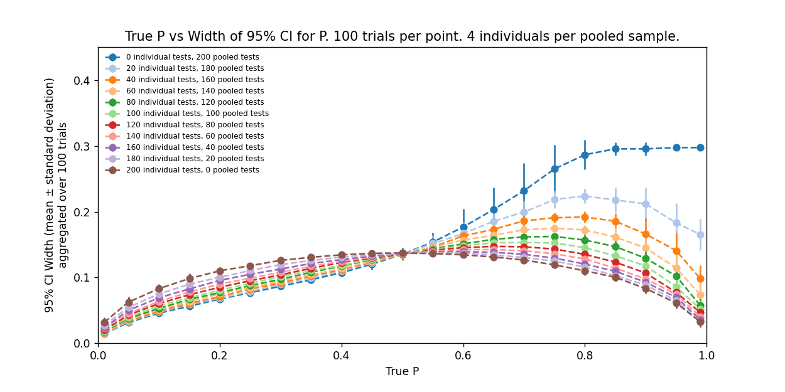
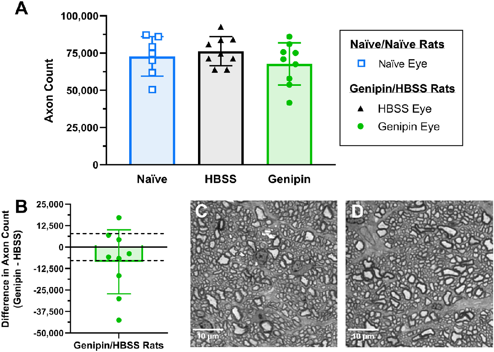
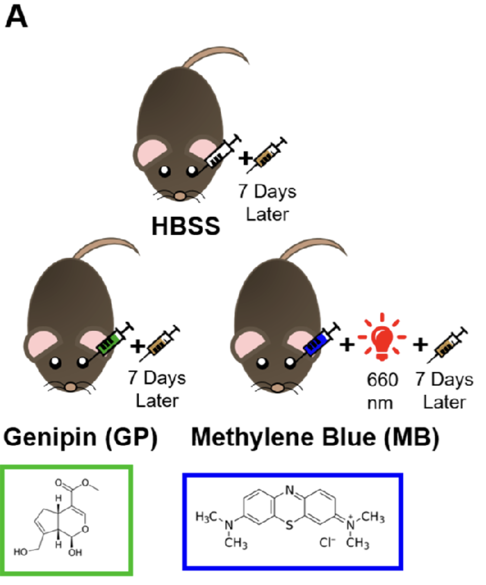

Publications
Patents and Patent Applications
Academic Articles:
- "Bayesian Prevalence Estimation from Pooled and Individual Data", MD Ritch, CJ Copley. Arxiv. 2023.

- "AxoNet: A deep learning-based tool to count retinal ganglion cell axons", MD Ritch, BG Hannon, AT Read, et al. Sci Rep 10, 8034. 2020.

- "Assessment of Visual and Retinal Function Following In Vivo Genipin-Induced Scleral Crosslinking", BG Hannon, C Luna, AJ Feola, MD Ritch, et al. Trans. Vis. Sci. Tech. 2020.

- "Transpupillary Collagen Photocrosslinking for Targeted Modulation of Ocular Biomechanics", BG Gerberich, BG Hannon, A Hejri, E Winger, E Echeverri, L Nichols, H Gersch, N Macleod, AT Read, MD Ritch, et al. Biomaterials. 2021.

- "Evaluation of Spatially Targeted Scleral Stiffening on Neuroprotection in a Rat Model of Glaucoma", BG Gerberich, BG Hannon, DM Brown, AT Read, MD Ritch, et al. Trans. Vis. Sci. Tech. 2022.

Lost in the Stacks:
Slow Riot (May 2017 - May 2020):